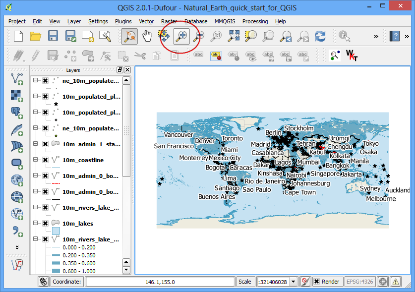
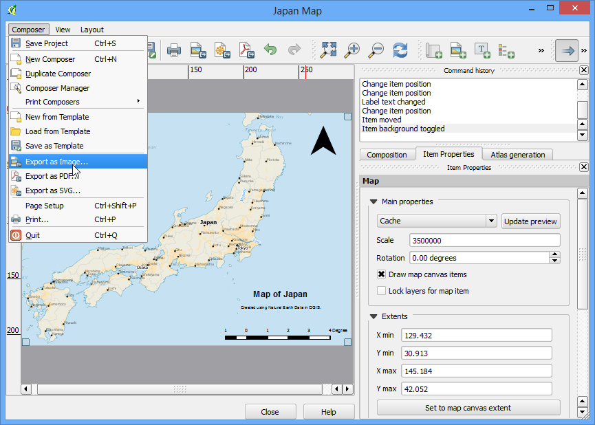

Realizzare una mappa
[ Download PDF A4 Letter ]
Spesso si ha bisogno di creare una mappa che possa essere stampata o pubblicata. QGIS ha un potente strumento chiamato Print Composer che vi permette di prendere i vostri layers GIS e impacchettarli per creare delle mappe.
Descrizione dell’esercizio
Il tutorial mostra come creare una mappa del Giappone con elementi standard come la freccia del nord, la barra della scala, la legenda e le etichette.
Ottenere i dati necessari
Useremo il dataset Natural Earth - nello specifico the Natural Earth Quick Start Kit che si presenta come un layer globale ben tematizzato che può essere caricato direttamente da QGIS.
Scaricare the Natural Earth Quickstart Kit.
Fonte dati [NATURALEARTH]
Procedimento
Scaricare ed estrarre il Natural Earth Quick Start Kit data. Aprire QGIS. Cliccare su

Cercate la cartella in cui avete estratto il dato. Dovreste vedere un file che si chiama Natural_Earth_quick_start_for_QGIS.qgs. Questo è il file di progetto che contiene il layer tematizzato nel formato QGIS. Click su apri.

Dovreste vedere parecchi layer nella tabella dei contenuti e una mappa del mondo tematizzata nel riquadro di QGIS. Se vedete un messaggio di errore in cima al riquadro cliccate sulla croce per chiuderlo.

In questo esercizio noi faremo una mappa del Giappone. Cliccate sullo strumento ingrandisci e disegnate un rettangolo intorno al Giappone per ingrandire l’area.

Una volta posizionati intorno alla nostra area di interesse, fate click sul pulsante Nuova Composizione di Stampa. Il comando è accessibile anche da .

Vi verrà chiesto di inserire un titolo per la stampa. Scrivete ‘Japan map’ e fate click su Ok.

Nella finestra Composizione di Stampa, fare click su Zoom Completo per vedere l’intera estensione della pagina.

Ora noi dovremmo portare l’immagine della mappa che vediamo in QGIS dentro questo layer. Fare click sul pulsante Aggiungi Mappa . Questo strumento è accessibile anche da .

Una volta che il pulsante “Aggiungi Mappa” è attivo, tenete premuto il pulsante sinistro del mouse e trascinate un rettangolo dove intendete inserire la mappa.

Vedrete che la finestra rettangolare sarà riempita con la mappa proveniente dal riquadro principale di QGIS. Dal momento che noi vogliamo che la nostra mappa copra l’intera estensione del layout, trascinate gli angoli del rettangolo sul bordo.

Modifichiamo il livello dello zoom sulla mappa. Fare click sulla scheda Proprietà dell’elemento`e inserite 3500000 come valore di :guilabel:`Scala .

Ora aggiungeremo una Freccia del Nord alla mappa. La Composizione di Stampa presenta una ricca collezione di immagini a uso delle mappa - compresi molti tipi di Freccia del Nord. Fare click su .

Tenendo il pulsante sinistro del mouse premuto, portare un rettangolo nell’angolo a destra in alto della mappa.

Sul pannello a destra fate click sulla scheda Proprietà dell’Elemento, fate click sulla sezione Cerca Cartelle e selezionate la Freccia del Nord che più vi piace.

Poi spostatevi in basso e deselezionate l’opzione Sfondo . Questo renderà l’immagine trasparente.

Ora aggiungiamo una Barra di Scala. Fare click su .

Fate click sul layout dove volete che appaia la barra di scala. Dalla scheda “Proprietà dell’elemento” scegliete lo stile che si adatta alle vostre esigenze. Cambiate inoltre le Unità della mappa e metteteci “Gradi” visto che le unità della mappa sono in gradi. Dovete anche modificare la trasparenza disattivando l’opzione Sfondo.

Ora aggiungeremo una legenda alla mappa. Fare clck su .

Fare click sul layout dove volete che la legenda appaia. Dal momento che la nostra layer list è molto grande, vedrete apparire un grosso box con tutti i layer.

Fare click sulla scheda Proprietà dell’elemento e selezionare i layer che non desideriamo appaiano sulla legenda. Click sul pulsante per rimuoverli dalla legenda.

Per gli scopi di questa mappa, noi limiteremo le informazioni di legenda ai cinque layer come si vede qui sotto. Click sul pulsante Modifica per cambiare il testo della legenda e renderlo più leggibile.

Ora è tempo di etichettare la nostra mappa. Click su .

Cliccate sulla mappa e trascinate il box dove volete che l’etichetta si trovi. Nella scheda Proprietà dell’elemento espandete la sezione Label e inserite il testo. Possiamo anche inserire codice testo in HTML. Barrate il box Leggi come HTML e così i tag HTML verranno letti in modo corretto.

Una volta che siete soddisfatti della mappa, potete esportarla come Immagine, come PDF o come SVG. In questo esercizio la esporteremo come un’immagine.

Salvate l’immagine nel formato che preferite. Quella di sotto è un’immagine esportate in formato PNG.